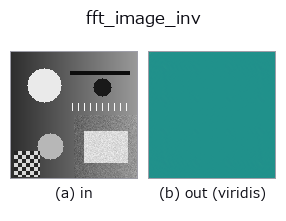

frequency op• データ種: image → image
• 呼び出し: fullseye.apply(img, "fft_image_inv", a=0.5, b=0.5) (2-D は 1 画像 + 2 スカラつまみ a,b∈[0,1] のモデル)
• HALCON 相当: fft_image_inv(意味・パラメータは HALCON リファレンスが参考になる)

*図は合成の入力 128×128 で実際に走らせた出力。左が入力、右が出力。点群は上から見た散布(明るさ = z)、1-D 列は折れ線、体積は z 方向の最大値投影、動画は中央フレーム、複素画像は振幅、絵にならない返り値は値そのもの。*
*出力は viridis 風の疑似カラー(暗い紫 = 小、黄 = 大)。距離・位相・向き・深度のような「量の場」を読むため。*
*つまみ a は出力を変えない(実測: 0.1 / 0.5 / 0.9 で同一)。*
*つまみ b は出力を変えない(実測: 0.1 / 0.5 / 0.9 で同一)。*
別の画像でも(合成シーン / 写真 / 硬貨。上段が入力、下段がその出力。つまみは既定):
▸ fft_image_inv: other inputs (docs site)
*カラー (H,W,3) の入力は載せていない: この op は色チャネルを 3 本目の空間軸として扱う(色を跨ぐ)ため。チャネルごとに分けて呼ぶこと。*
入力画像をそのまま周波数領域の配列とみなして逆 FFT を掛け、実部を
`signed01` で [0,1] に写す(0.5 がゼロ)。本来 HALCON の
`fft_image_inv`（Compute the inverse fast Fourier transform of an
image.）は `fft_image` が作った複素スペクトル(実部・虚部の組)を戻す
演算だが、この代役はグレー画像 1 枚しか扱えないパイプライン契約のため、
画素値をそのまま(虚部 0 の)複素配列として逆変換する近似になっている
(`fft_image` の出力をそのまま渡しても意味的な往復にはならない点に注意)。
`a, b` は未使用。
• gallery2d_texture_freq ファミリ ガイド
• サンプルデータ カタログ(DL URL / ライセンス) — 2-D は skimage.data(BSD/public)+ 合成、3-D は実データ源(Stanford/PDS 等)の DL URL。
• 演算子の来歴・参考文献 — この op 族の元になった研究/手法の出典。
• アルゴリズムの正典(著者・年)と用途は上記ファミリ使い方ガイドに記載。
下のプログラムは実際に走ることを確かめてある(図と同じ入力)。Studio のヘルプではこのブロックがボタンになり、その場で読み込んで実行できる。
fft_image_inv 0.40 0.50
▸ Load this pipeline · Load & run
• gallery2d_texture_freq — py -3.11 examples/gallery2d_texture_freq.py
image を入力に取れる)identity · gaussian · mean_box · bilateral · unsharp · median · min_filter · max_filter
frequency)lowpass · highpass · sk_butterworth · fft_image · power_real · power_byte · phase_rad · highpass_image
*Provenance: ops.py — 2D operator registry. この per-op ノートは tools/opdocs.py md が自動生成(手編集しない)。*
© 2026 Kazufumi Furuse — Fullseye operator documentation. Licensed under Apache-2.0.
{kind=link}